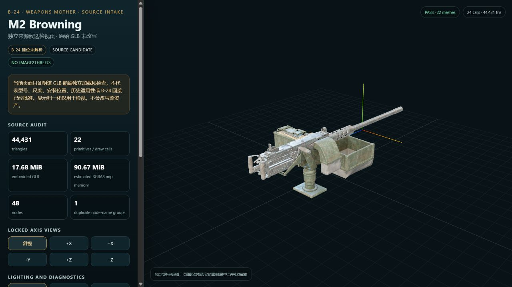

MAIN REVIEW · ANIMATED

双联 M2 连续射击系统 V002
直接进入运行页。可以调整曳光弹比例与涂装，检查真实枪口节点、永久弹壳、轻型支架、双枪分离和枪体检修模块。
单文件 HTML真实枪口轴线永久弹壳检修拆分
打开 V002 双联射击网页→B-24 · Twin Aircraft M2 · Production V002
V002 已把枪口锁到源网格的真实膛轴中心，加入三维火焰、烟雾、火星、可配置曳光弹、永久弹壳堆积、四种涂装、轻型航空支架和枪体检修拆分。

直接进入运行页。可以调整曳光弹比例与涂装，检查真实枪口节点、永久弹壳、轻型支架、双枪分离和枪体检修模块。